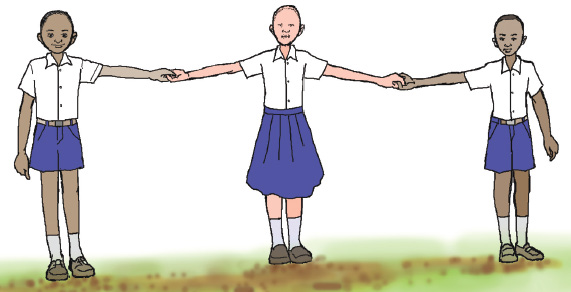

Ninaondoka kwenye mstari. Kwa heri. Tazama, sasa niko mbali nanyi. Picha ifuatayo inaonesha niko mbali.
Mwanafunzi mmoja amesimama peke yake upande wa kushoto, mbali na wanafunzi wawili waliosimama upande wa kulia wakishikana mikono.
Mimi ni theluthi moja kati yetu watatu. Ninyi je?
Sisi ni theluthi mbili kati yetu watatu.